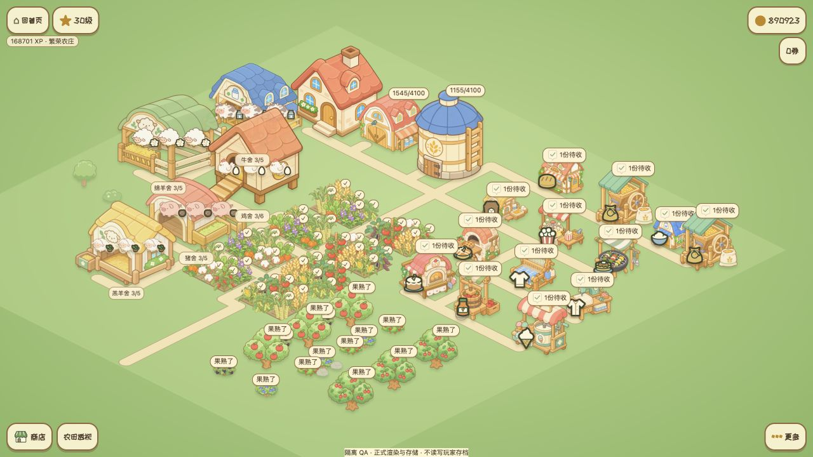
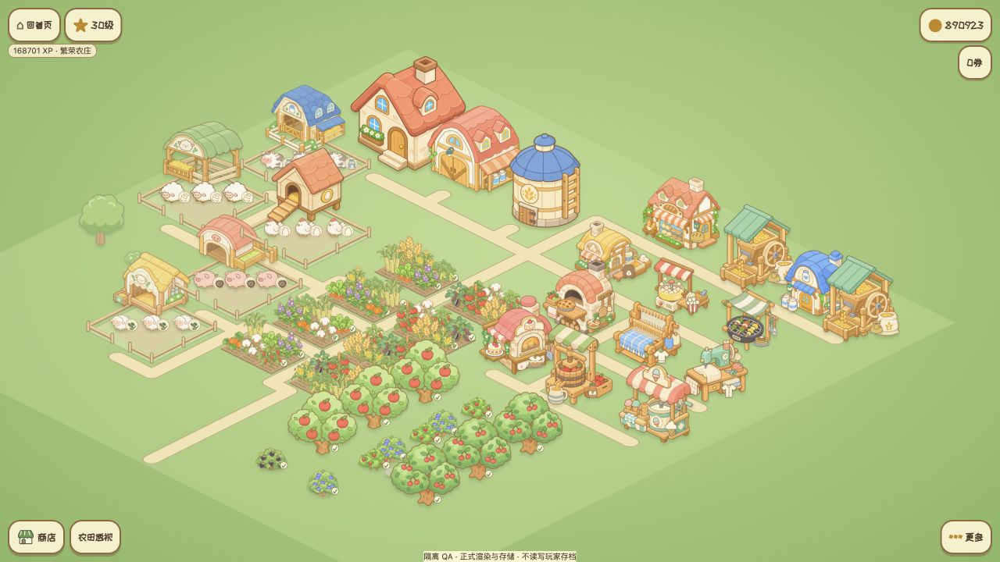
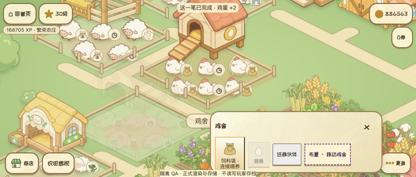
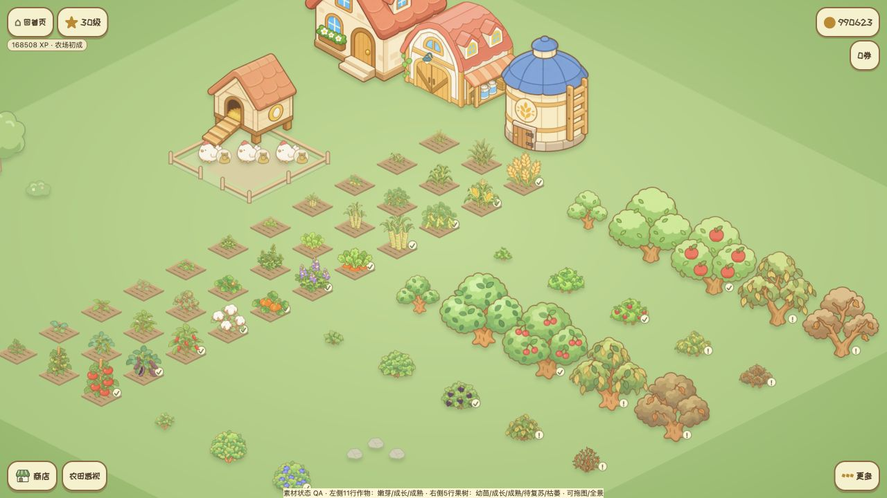
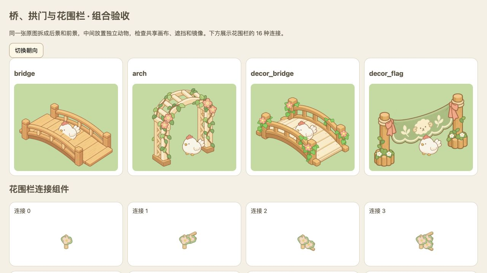

现有贴纸风格478 项测试通过2026.10.26
让素材真正落进农场
统一显示比例和脚底落点，给栏舍留出完整院子，让动物、围栏和建筑分层。减少计时条与产物图标的遮挡，同时让朝向、点击区域和画面一致。
修改前

审查基线 71c80aa，同一成长阶段测试布局。
修改后

五类棚舍组成完整院子；作物扎根田地，成品图标更紧凑。
截图窗口和相机尺度略有不同；用于观察结构与信息密度，不作逐像素比较。以下均为实际浏览器截图。
横屏手机 · 连续收蛋
844 × 360 视口下，拖动收蛋篮一笔收取两只鸡。动物保持独立点击区域，前景围栏只遮住脚部。

植物 · 生长状态与地面落点
幼苗不再被计时条挡住；成熟胡萝卜只露出根冠。全部状态围绕各自标注的根部落地。

组件 · 前后遮挡与连接
桥、拱门和横幅从同一画布分层，反射时保持配准。花篱笆补齐 16 种邻接方式。

风车和机器运动部件仍为静态图；此轮提交素材与渲染适配，尚未发布线上。